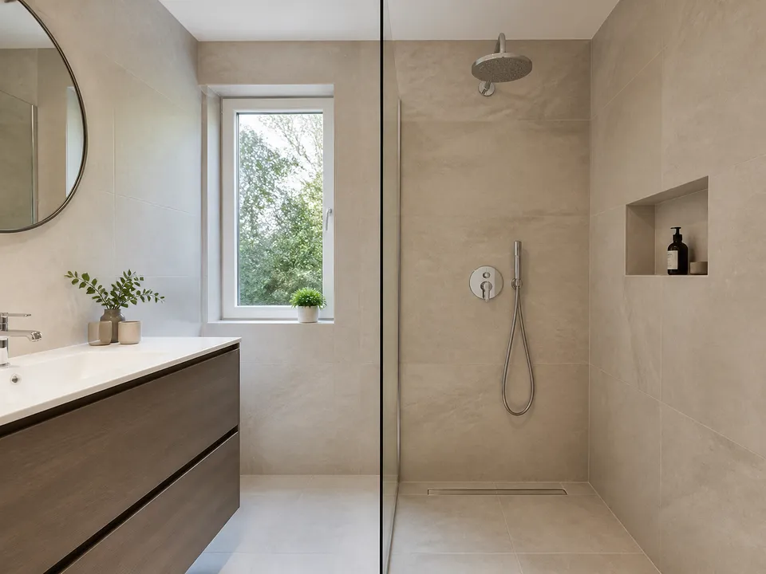

Pagrindo paruošimas
Patikrinamas sienų ir grindų lygumas, paviršiai gruntuojami ir prireikus išlyginami.
Atliekamas visas plytelių meistro darbas – nuo pagrindo patikros ir drėgnų zonų hidroizoliacijos iki tikslių pjūvių, dušo nuolydžių, siūlių ir 45° kampų.

Patikrinamas sienų ir grindų lygumas, paviršiai gruntuojami ir prireikus išlyginami.
Drėgnose zonose įrengiami hidroizoliacijos sluoksniai, kampų juostos ir vamzdžių manžetės.
Formuojami nuolydžiai, derinamas trapas ar latakas, tiksliai suplanuojamas plytelių išdėstymas.
Klijuojamos sienų bei grindų plytelės, suleidžiami 45° kampai, glaistomos ir hermetizuojamos siūlės.
Vonios kambario plytelės klijuojamos Pabradėje, Švenčionyse ir Švenčionėliuose, o pagal grafiką – Vilniuje.
Vonios interjerui taip pat įrengiamos individualios kriauklės iš plytelių. Naudingos rekomendacijos pateikiamos straipsnyje apie vonios hidroizoliaciją.
Atsiųskite patalpos nuotraukas, matmenis ir plytelių formatą – parengsime pirminį įvertinimą.